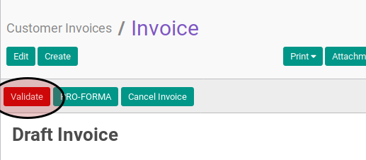

Menyetujui Customer Invoice
A. INPUT
- Data customer invoice yang akan disetujui harus memiliki status Waiting for Approval.

- User yang akan menyetujui harus memiliki akses untuk menyetujui customer invoice.
B. LANGKAH KERJA
- Buka menu Accounting -> Customer -> Customer Invoice. Abaikan jika sudah berada pada menu yang dimaksud.
- Buka data customer invoice yang akan disetujui. Abaikan jika data sudah dibuka.
- Klik tombol Validate pada bagian atas-kiri form.

C. OUTPUT
- Status dari customer invoice akan berubah menjadi Open

-
Penjurnalan customer invoice akan otomatis terbentuk.
-
Penjurnalan customer invoice akan mengikuti ketentuan sebagai berikut:
-
Satu buah journal item akan terbentuk dengan ketentuan sebagai berikut:
- Akun yang akan digunakan akan sesuai dengan isian Account
- Akun akan didebit sejumlah nilai Total yang sudah dikonversi ke dalam mata uang perusahaan.
- Apabila isian Currency berbeda dengan mata uang perusahaan, maka (1) nilai Currency pada journal item yang terbentuk akan sama dengan isian Currency, dan (2) nilai Amount Currency akan sama dengan nilai Total
-
n buah journal item akan terbentuk dengan ketentuan sebagai berikut:
- n sama dengan jumlah invoice line yang dimiliki oleh customer invoice
- Akun yang akan digunakan akan sesuai dengan isian Account
- Apabila nilai Sub Total bernilai positif maka akun akan dikredit sejumlah yang sama dengan nilai Sub Total dalam mata uang perusahaan. Apabila nilai Sub Total bernilai negatif maka akun akan didebit sejumlah yang sama dengan nilai Sub Total dalam mata uang perusahaan.
- Apabila isian Currency berbeda dengan mata uang perusahaan, maka (1) nilai Currency pada journal item yang terbentuk akan sama dengan isian Currency, dan (2) nilai Amount Currency akan sama dengan nilai Total
-
m buah journal item akan terbentuk dengan ketentuan sebagai berikut:
- m akan sama dengan jumlah data tabel Tax Lines
- Akun yang akan digunakan akan sesuai dengan isian Tax Account
- Apabila nilai Amount bernilai positif maka akun akan dikredit sejumlah yang sama dengan nilai Amount dalam mata uang perusahaan. Apabila nilai Amount bernilai negatif maka akun akan didebit sejumlah yang sama dengan nilai Amount dalam mata uang perusahaan.
-